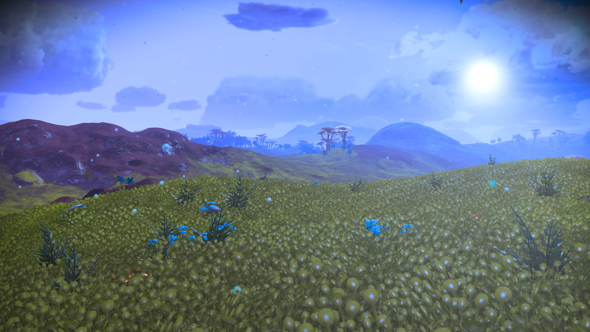

Runtime Procedural Terrain Generation (in Unity)
Note: This is a very long, multi-page document. If you're not seeing it as such, you're probably using a relatively small browsing window, and the navigation is hidden in a hamburger menu. You can also use the "next page" / "previous page" buttons at the bottom of the screen, and in many browsers (if you've got a keyboard), "N" and "P" (or "," and ".") will navigate as well. If your reading environment can make the window sufficiently wide, you'll get navigation outlines on both sides of the text (page selection on the left, contents within a page on the right).
I've always loved open world games, with their illusion of complete freedom of movement in a vast world ready for exploration. And as a developer, I've similarly been a fan of procedural generation of game environments: the notion that the game can—through application of rules—generate its own content. In the best scenarios, this gives way to emergent behavior, in which those rules combine in ways that are more than the sum of their parts, and can produce results (pleasantly) surprising even to the developer. (Contrast with bugs, which are results unpleasantly surprising to the developer...)
The logical endpoint of this are games like No Man's Sky, in which virtually the entire world is procedurally generated, like this:

As a developer, one of the attractions of such systems is that a small team--perhaps even an individual--can create a "large" game in this way. Since, despite what the scale tells me, I am an individual, and I've now got time to look into projects like this, I'm combining an effort to learn the Unity game engine with a desire to push some boundaries of procedural design.
So what is this site, anyway? Well, it's something between a reference, a blog, and a developer diary as I play around with building terrains. I show only snippets of code, but if you want the actual code in whatever state it's in, send me an e-mail. You'll notice that it's a little disordered; some sections just sort of trail off until I implement the next part of them, when I go back and add more content. The physical organization is meant to be readable rather than either strictly lumping topics together or chronological. And I keep tweaking it! Will this turn into something more than some musings on the web? Who knows? That's the wonder of it.
Another wonder of the modern Internet is that you never know who's going to wander by, courtesy of Bing, Google, or the world's most specific typo. If you're looking for me, contact information is over at https://www.chriskempke.com, or use email to "ckempke" at the domain mac.com.
--Christopher Kempke
Tools
This site is being hosted at GitHub Pages, but it's not using their Jekyll parser. Instead, I'm using MkDocs, with the Material theme, and with the Mermaid extensions turned on.
Mermaid allows graphs such as flowcharts and sequence diagrams:
flowchart TB
c1-->a2
subgraph one
a1-->a2
end
subgraph two
b1-->b2
end
subgraph three
c1-->c2
end
one --> two
three --> two
two --> c2
I also enable KaTeX, which allows both inline (\(c = \pm\sqrt{a^2 + b^2}\)) and callout LaTeX mathematics symbols:
Docsify itself parses Markdown files of various sorts to produce the HTML display you're looking at now, including the sidebar to the left (or in the hamburger menu if you're browsing on mobile) and the live text search.